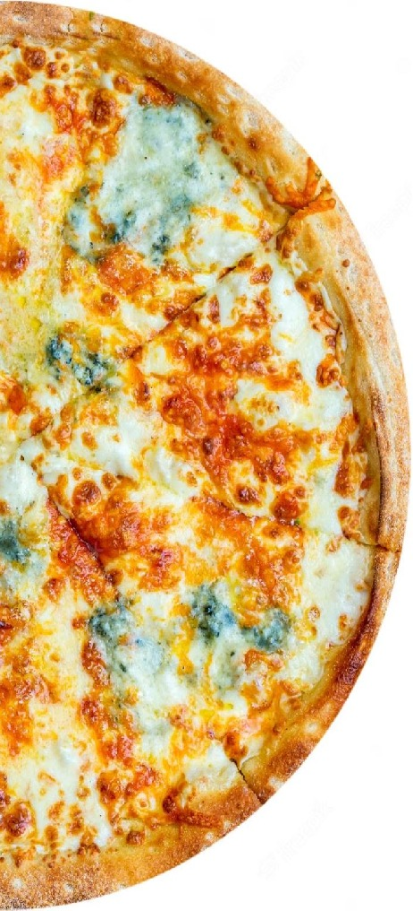

|  |
Ingrediente: Mozzarella, gorgonzola, parmezan, brânză Cheddar, mascarpone, ulei măsline. Aromele tipurilor de brânză se împrietenesc armonios în acest sortiment de pizza, într-o reuniune de senzații plăcute pe care gustul tău le va desluși treptat. Începi prin a simți mirosul cald de brânză topită, îți deschizi papilele pentru a distinge textura fină și continui să te bucuri de gustul împletit din aromele de mozzarella, gorgonzola, parmezan și cheddar. Se spune că pizza Quattro Formaggi, cunoscută și sub numele de pizza "patru brânzeturi", a apărut pentru prima dată în Italia, în regiunea Lombardia, în anii '70. Această pizza a devenit populară datorită combinației delicioase de brânzeturi și arome, care au făcut-o unul dintre cele mai apreciate feluri de pizza din lume. Combinația originală de brânzeturi din pizza Quattro Formaggi include brânza Gorgonzola, brânza mozzarella, brânza provolone și brânza Parmigiano-Reggiano, însă există și alte variante care pot include alte tipuri de brânzeturi, cum ar fi brânza Roquefort, brânza feta sau brânza de capră. Pizza Quattro Formaggi a devenit populară în întreaga lume și este astăzi un fel de mâncare foarte apreciat, fiind disponibilă în majoritatea restaurantelor de pizza și în magazinele de alimente. În timp, pizza Quattro Formaggi a evoluat și a fost adaptată la diferite gusturi și preferințe culinare, dar a rămas unul dintre cele mai iubite feluri de pizza din lume. |